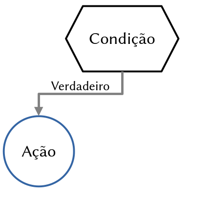
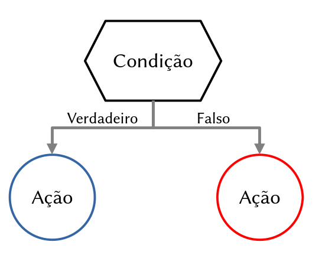
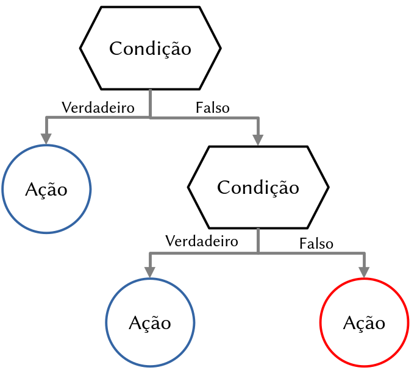
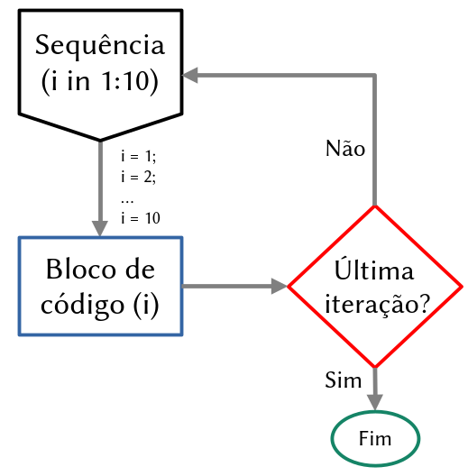
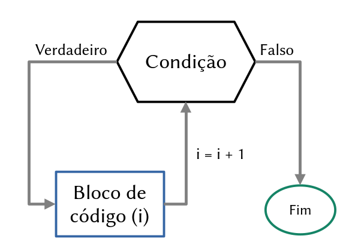
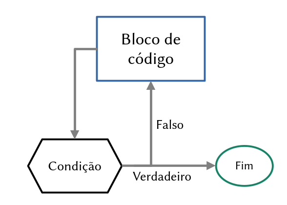

Manipulação de dados e programação em R
NT265/NE441 - Análise de dados e apresentação de gráficos usando a linguagem R
24 de outubro de 2024
Maurício Vancine
Ecólogo e Doutor em Ecologia
Pós-Doc em Ecologia Espacial (Mathias)
Ecologia Espacial
Modelagem Ecológica
Análise de Dados Ecológicos e Geoespaciais
Ecologia e Conservação de Anfíbios
Open source [R, QGIS, GRASS GIS, GNU/Linux, …]
Análises Ecológicas no R (2022)

15 capítulos: linguagem R, tidyverse, perguntas em ecologia, análises univariadas, multivariadas e geoespaciais
Conteúdo
- Revisão dos 10 principais conceitos em R
- Pseudocódigo
- Dados brutos
- Observações e variáveis
- Tabelas de frequência
- Frequência absoluta e relativa
- Função:
table - Medidas de posição e dispersão
- Funções:
apply,lapply,sapply,tapply…
- Controle de fluxo
- Condicional:
if,elseeelse if - Estruturas de repetição
- Laços:
for,whileerepeat - Comandos:
breakenext - Criar funções
IMPORTANTE!!!
Estamos num espaço seguro e amigável
Sintam-se à vontade para me interromper e tirar dúvidas

Revisão

Revisão dos 10 principais conceitos em R
- Console
- Script
- Operadores
- Objetos
- Funções
- Pacotes (packages)
- Ajuda (help)
- Ambiente (environment)
- Diretorio
- Citações
Pseudocódigo
Forma de representar algoritmos, funções ou outros processos de forma simplificada e intuitiva
Escrito em linguagem natural e com elementos que se assemelham a uma linguagem de programação, mas não é realmente executável
Ferramenta para a comunicação de ideias de programação, permitindo que programadores de diferentes níveis de habilidade compreendam e colaborem de maneira eficiente
Pseudocódigo
# codigo
# 0. listar pacotes
library(tidyverse)
library(palmerpenguins)
# 1. importar dados
penguins <- penguins_raw
penguins
# 2. limpar e ajustar dados
penguins_clean <- na.omit(penguins)
penguins_clean
# 3. analises estatisticas
cor.test(penguins_clean$bill_length_mm, penguins_clean$bill_depth_mm)
# 4. graficos
plot(penguins_clean$bill_length_mm, penguins_clean$bill_depth_mm, pch = 20)
# 5. exportar resultados
png("grafico_penguins.png")
plot(penguins_clean$bill_length_mm, penguins_clean$bill_depth_mm, pch = 20)
dev.off()Dúvidas?
Para apresentar os próximos conceitos e funções, vamos usar dados de pinguins

palmerpenguins
Dados de medidas de pinguins chamados
palmerpenguinsDados coletados e disponibilizados pela Dra. Kristen Gorman e pela Palmer Station, Antarctica LTER, membro da Long Term Ecological Research Network
Dois conjuntos de dados:
penguins_raw(dados brutos)penguins(versão simplificada)

palmerpenguins

Análise exploratória de dados (AED)
Dados brutos
palmerpenguins
# A tibble: 10 × 8
species island bill_length_mm bill_depth_mm flipper_length_mm body_mass_g
<fct> <fct> <dbl> <dbl> <int> <int>
1 Adelie Torgersen 39.1 18.7 181 3750
2 Adelie Torgersen 39.5 17.4 186 3800
3 Adelie Torgersen 40.3 18 195 3250
4 Adelie Torgersen 36.7 19.3 193 3450
5 Adelie Torgersen 39.3 20.6 190 3650
6 Adelie Torgersen 38.9 17.8 181 3625
7 Adelie Torgersen 39.2 19.6 195 4675
8 Adelie Torgersen 41.1 17.6 182 3200
9 Adelie Torgersen 38.6 21.2 191 3800
10 Adelie Torgersen 34.6 21.1 198 4400
# ℹ 2 more variables: sex <fct>, year <int>Observações e variáveis
- Cada linha dos dados é uma observação
- Cada coluna dos dados é uma variável
# A tibble: 10 × 8
species island bill_length_mm bill_depth_mm flipper_length_mm body_mass_g
<fct> <fct> <dbl> <dbl> <int> <int>
1 Adelie Torgersen 39.1 18.7 181 3750
2 Adelie Torgersen 39.5 17.4 186 3800
3 Adelie Torgersen 40.3 18 195 3250
4 Adelie Torgersen 36.7 19.3 193 3450
5 Adelie Torgersen 39.3 20.6 190 3650
6 Adelie Torgersen 38.9 17.8 181 3625
7 Adelie Torgersen 39.2 19.6 195 4675
8 Adelie Torgersen 41.1 17.6 182 3200
9 Adelie Torgersen 38.6 21.2 191 3800
10 Adelie Torgersen 34.6 21.1 198 4400
# ℹ 2 more variables: sex <fct>, year <int>Tabela de frequência
Dados brutos: conjunto dos valores numéricos coletados na pesquisa
Classes: intervalo de valores contínuos (0 |— 1)
Frequência absoluta (fi): número de vezes que uma observação aparece ou pertencente a um intervalo ou classe
Frequência total: soma de todas as frequências absolutas (fi)
Frequência relativa (fri): valor da razão de cada frequência absoluta (fi) com a frequência total (somatório de fi)
Frequência acumulada (Fi): obtida somando (acumulando) os valores da frequência absoluta (fi)
Frequência relativa acumulada (Fri): obtida somando (acumulando) os valores da frequência relativa (fri)
Tabela de frequência
| Classes | Freq. absoluta (fi) | Freq. relativa (fri) | Freq. acumulada (Fi) | Freq. relativa acumulada (Fri) |
|---|---|---|---|---|
| 0|—1 | 4 | 0.13 | 4 | 0.13 |
| 1|—2 | 8 | 0.26 | 12 | 0.39 |
| 2|—3 | 12 | 0.39 | 24 | 0.77 |
| 3|—4 | 7 | 0.23 | 31 | 1.00 |
| Total | 31 | 1.00 |
table
- Cria uma tabela de frequências para variáveis categóricas ou para a combinação de variáveis
- Sintaxe:
...: Vetores ou variáveis categóricas a serem tabuladasexclude: Valores a serem excluídos (como NA)useNA: Se e como contar valores faltantes (“no”, “ifany”, “always”)Exemplo
Tabela de frequência
Frequência absoluta (fi)
Tabela de frequência
Frequência absoluta (fi)
Frequência relativa (fri)
Tabela de frequência
Frequência absoluta (fi)
Frequência relativa (fri)
Tabela de frequência
Frequência absoluta (fi)
Frequência relativa (fri)
Tabela de frequência
Frequência absoluta (fi)
Biscoe Dream Torgersen
Adelie 44 55 47
Chinstrap 0 68 0
Gentoo 119 0 0Frequência relativa (fri)
Para se aprofundar
cumsum: função para soma cumulativacut: função para dividir uma sequencia de valores em intervalosjanitor: pacote com funções para limpar bases de dados e fazer tabelas de frequência

Dúvidas?
Medidas-resumo
Medidas de posição
Moda: valor mais frequente das observações
Mediana: valor que divide as observações ordenadas em duas partes iguais
Média aritmética: soma das observações dividida pelo número de observações
Outras médias: ponderada, geométrica e harmônica
Medidas-resumo
Medidas de dispersão
Variância: medida de quantas observações diferem do valor central (média)
Desvio padrão: raiz quadrada da variância (mantêm a mesma unidade de medida)
Erro padrão: variação da média amostral em relação à média populacional (confiabilidade da média amostral)
apply
- Função nativa no R que aplica uma função sobre as margens de um array ou matriz
- Sintaxe:
X: matriz, data frame ou array em que será aplicada a funçãoMARGIN: valor indica a margem onde a função será aplicada (1 = linhas ou 2 = colunas)FUN: função que será aplicadaExemplo:
apply

Família apply
- Aplicam uma função a elementos de estruturas de dados como vetores, listas, matrizes ou data frames de forma eficiente, evitando laços
lapply
Aplica uma função a cada elemento de uma lista ou vetor, retornando sempre uma lista
Exemplos
sapply
- Similar a
lapply, retornando matriz, vetor ou lista (ele escolhe…) - Exemplo
vapply
- Similar a sapply, mas permite definir o tipo de retorno
- Exemplo:
tapply
- Aplica função sobre subconjuntos definido por fatores
- Exemplo
mapply
- Aplica função a múltiplos vetores ou listas de forma paralela
- Exemplos
rapply
- Função recursiva usada para aplicar uma função a todos os elementos de uma lista (ou estrutura aninhada de listas)
- Exemplos
rapply
- Função recursiva usada para aplicar uma função a todos os elementos de uma lista (ou estrutura aninhada de listas)
- Exemplos
rapply
- Função recursiva usada para aplicar uma função a todos os elementos de uma lista (ou estrutura aninhada de listas)
- Exemplos
rapply
- Função recursiva usada para aplicar uma função a todos os elementos de uma lista (ou estrutura aninhada de listas)
- Exemplos
Medidas-resumo
Média
[1] 997.200 1010.725 875.825 924.750 974.975 965.675 1232.200 860.175
[9] 1012.700 1163.425 984.850 925.675 1190.050 890.450 1115.375 907.525
[17] 959.100 1011.025 1047.825 1009.000Medidas-resumo
Desvio padrão
[1] 1836.619 1861.021 1584.739 1685.311 1784.962 1774.364 2296.541 1561.572
[9] 1859.765 2159.214 1811.644 1684.724 2208.028 1624.746 2057.828 1663.093
[17] 1762.071 1860.886 1936.213 1862.067Medidas-resumo
Média
Adelie Chinstrap Gentoo
38.82397 48.83382 47.56807 Medidas-resumo
Desvio padrão
Adelie Chinstrap Gentoo
2.662597 3.339256 3.106116 Dúvidas?
Programação no R
- Automatizar tarefas maçantes…
- Direcionar o comportamento dos códigos com base em condições ou repetições
- Criar funções para reutilizar códigos, melhorar organização, reduzir erros e maior generalização
Controle de fluxo
- Muda o comportamento do código com base em condições
- Condicionais:
if,elseeelse if

Operadores
Operadores relacionais (TRUE|FALSE)
| Operador | Descrição | Uso |
|---|---|---|
| < | Menor | a < b |
| > | Maior | a > b |
| == | Igual | a == b |
| <= | Menor ou igual | a <= b |
| >= | Maior ou igual | a > = b |
| != | Não igual (diferente) | a!=b |
Operadores
Operadores lógicos (TRUE|FALSE)
| Operador | Descrição | Uso |
|---|---|---|
| ! | Lógico NÃO | !a |
| & | Lógico E (elementar) | a & b |
| | | Lógico OU (elementar | a | b |
| && | Lógico E (primeiro) | a && b |
| || | Lógico OU (primeiro) | a || b |
if
- Se uma condição for verdadeira, faça …
[1] TRUE[1] "x é maior que 5"
if
- Se duas condições forem verdadeiras, faça …
if
- Se algo menos uma condição for verdadeira, faça …
if e else
- Se uma condição for verdadeira, faça …
- Se não (falso), faça …
[1] FALSE[1] "x é menor ou igual a 5"
else if
- Se uma condição for verdadeira, faça …
- Se não (falso) se for verdadeiro, faça …
- Se não (falso), faça …
x <- 7
if(x > 10){
print("x é maior que 10")
} else if(x > 5){
print("x está entre 6 e 10")
} else{
print("x é 5 ou menor")
}[1] "x está entre 6 e 10"
Dúvidas?
Estruturas de repetição
- Executa um bloco de código com base em repetições
- Laços:
for,whileerepeat - Controles:
breakenext
for
- Executa um bloco de código
parauma sequência de valores (vetores ou listas) [iteração]

for
- Executa um bloco de código
parauma sequência de valores (vetores ou listas) [iteração]
while
- Executa um bloco de código
enquantouma condição é verdadeira

repeat
- Executa um bloco de código
repetidamenteaté que uma condição de parada (break) seja atendida
[1] 1
[1] 2
[1] 3
[1] 4
[1] 5
break
- Usado para sair de um laço antes que ele complete todas as iterações
next
- Usado para fazer o laço pular a próxima iteração sem executar o código que vem após ele
Controle de fluxo e repetição
for
Controle de fluxo e repetição
while
Usos avançados do for
- Iterando sobre elementos de uma lista
iassume o valor dos elementos
Usos avançados do for
- Iterando sobre posição dos elementos de uma lista
iassume a posição dos elementos
Usos avançados do for
- Combinando resultados em um objeto vazio
Usos avançados do for
- Combinando resultados em um objeto vazio pela posição
Criar funções
Muito obrigado!


Slides por Maurício Vancine, feitos com Quarto. Código disponível no GitHub.